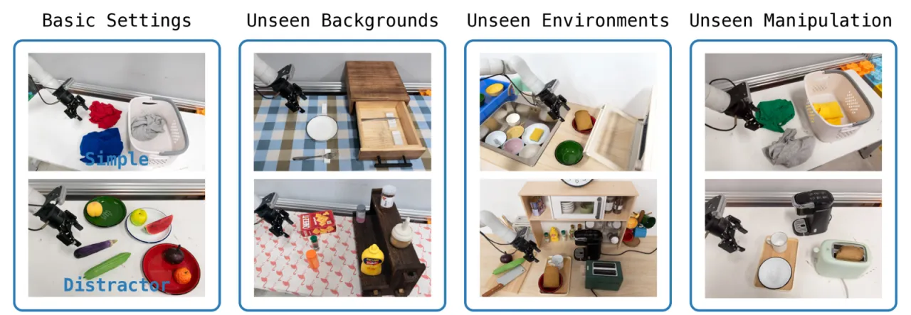
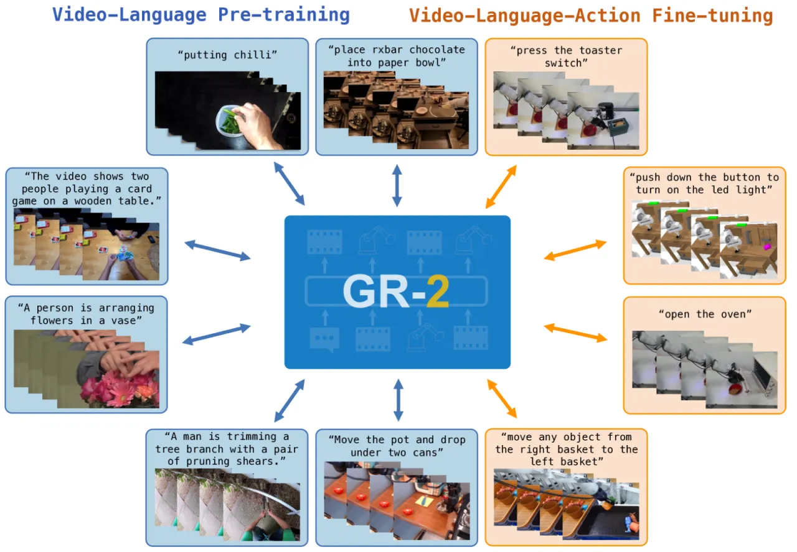
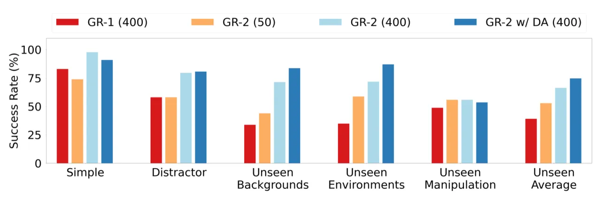
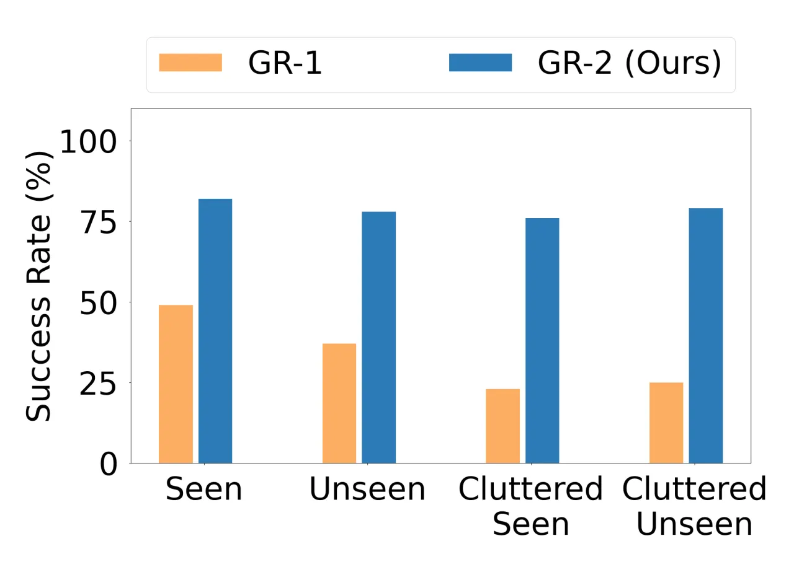
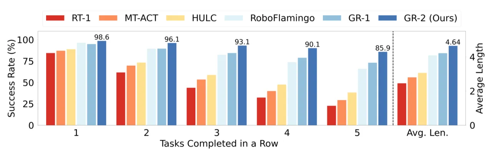
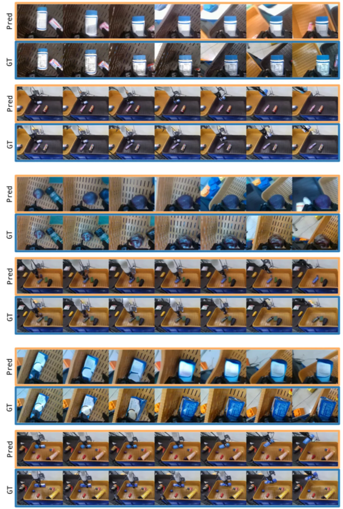

GR-2 是一个两阶段训练的生成式视频-语言-动作（VLA）模型：首先在海量互联网视频上学习通用的视觉动态知识，再通过机器人轨迹数据进行微调，同时预测未来视频帧和动作序列。该模型在超过100项桌面操作任务上达到97.7%的平均成功率，并展现出对未见场景、物体和技能的强大泛化能力。
机器人操作数据的采集代价高昂，限制了策略学习的规模化。互联网上大量的视频数据蕴含丰富的物体交互知识——如何将这些"免费"的视觉先验有效迁移到机器人策略学习？
"Pre-training on video generation can effectively transfer knowledge to robot policy learning, enabling a generalist robot agent to perform diverse manipulation tasks and generalize to novel environments."

GR-2 采用两阶段训练策略：大规模视频生成预训练 + 机器人数据微调。骨干网络为 GPT-style Transformer，图像由冻结的 VQGAN 编码为离散 token，文本由冻结的 CLIP 编码；仅 95M 参数参与训练（默认 GR-2-B），其余为冻结参数。

在 3800万 文本-视频对（超过 500亿 token）上训练。数据来源覆盖烹饪、运动、日常操作等多样场景，以及真实机器人操作数据集（RT-1、Bridge）。模型学习根据文本指令和起始帧，自回归预测后续帧序列，从而获取物体外观、运动规律和物理交互的通用表征。
在机器人演示数据上进行 双重预测（dual prediction）：既生成未来视频帧，又同步预测动作序列。动作由 conditional VAE 编码并解码，以机器人关节角度和夹爪状态为输入。此阶段的视频预测目标充当辅助监督，促进视觉表征与动作策略的协同学习。
在真实机器人部署中，GR-2 输出的末端执行器轨迹通过 trajectory optimization 和 real-time motion tracking 转换为关节指令，实现灵活稳定的操作控制，无需针对每台机器人单独设计低层控制器。
论文测试了四种规格：GR-2-S（30M 可训练参数）、GR-2-B（95M）、GR-2-L（312M）、GR-2-XL（719M），验证损失和任务成功率均随规模单调提升，表现出良好的 scaling 特性。
三大评测基准：(1) 105项桌面多任务学习（40,000条轨迹）；(2) 端到端 Bin Picking（122个物体，94,000条轨迹）；(3) CALVIN 仿真基准（34项任务，1~5步连续序列）。对比基准包括 RT-1、MT-ACT、HULC、RoboFlamingo 和 GR-1。
| 评测设置 | GR-1 | GR-2 | 备注 |
|---|---|---|---|
| Simple | — | 97.7% | 标准场景，每任务400条轨迹 |
| Unseen Backgrounds | 低于 GR-2 | 71.4% | 未见背景泛化 |
| Unseen Environments | 低于 GR-2 | 71.7% | 未见环境泛化 |
| Unseen Environments (w/ DA) | — | 87.0% | 加入数据增强后 |
| Unseen Manipulation | 低于 GR-2 | 55.8% | 未见操作物体（最难） |
| Simple（每任务~50条） | — | 73.9% | 数据高效场景 |

122个物体（含透明、可变形、反光物体），分为 Seen / Unseen / Cluttered Seen / Cluttered Unseen 四种场景。GR-2 平均成功率从 GR-1 的 33.3% 大幅提升至 79.0%，在杂乱场景（两倍物体密度）和未见物体上均保持稳健性能。

| 连续完成任务数 | GR-1 | GR-2 | 最强 baseline（RoboFlamingo） |
|---|---|---|---|
| 1 task | 94.9% | 98.6% | 96.4% |
| 2 tasks | 89.6% | 96.3% | 89.6% |
| 3 tasks | 84.0% | 93.2% | 82.4% |
| 4 tasks | 79.7% | 90.4% | 74.0% |
| 5 tasks | 73.1% | 85.9% | 66.0% |
| Avg length | 4.21 | 4.64 | 4.09 |


在 Unseen Manipulation 设置下，GR-2 的成功率仅为 55.8%，远低于其他场景。论文指出典型失败案例包括"picking unseen objects of novel shapes"和"mistakenly selecting wrong object"。作者明确表示将"explore techniques to further improve generalization for unseen manipulation tasks, including handling novel objects and executing new skills"。
尽管视频预训练提升了数据效率，多任务学习仍需约40,000条机器人轨迹（105项任务），Bin Picking 需要94,000条轨迹。相比于零样本或少样本泛化的目标，数据需求仍然显著。
在3800万视频、500亿 token 上进行预训练对计算资源要求极高，限制了研究复现性和小机构的可及性。论文未提供完整的预训练成本分析。
GR-2 的动作空间基于关节角度和夹爪状态，切换到不同形态（如双臂、足式机器人）需要重新设计状态编码器和 Whole-Body Control 模块，跨平台迁移代价较高。